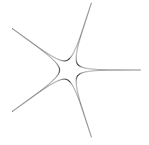
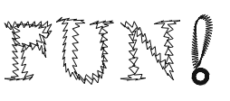

Supershape
Description
The Supershape library implements Johan Gielis' superformula in NodeBox. Gielis suggested that the formula can be used to describe many complex shapes and curves that are found in nature. You can use the tools in this lbrary to create anything from a circle or a square to a flower or an amoeba, or to transform other paths, like text.
Note that the Supershape library is only available for non-commercial purposes.
A special thanks goes to Johan Gielis.
Download
 | supershape.zip (11KB) Last updated for NodeBox 1.9.4 Author: Johan Gielis, Frederik De Bleser |
Documentation
How to get the library up and running
Put the supershape library folder in the same folder as your script so NodeBox can find the library. You can also put it in ~/Library/Application Support/NodeBox/.
supershape = ximport("supershape")
Creating a supershape path
path(x, y, w, h, m, n1, n2, n3, points=1000, percentage=1.0, range=pi*2)
The path() command returns a supershape as a path drawable with drawpath(). The first four parameters (x, y, w, h) define the path's origin, width and height. The next four (m, n1, n2 and n3) define the path's shape.
Increasing m adds rotational symmetry to the shape: when m is 0 you get a circle, m=2 is an ellipse. m=4 is a square and so on. As the n's are kept equal but reduced the form becomes increasingly pinched. When m=5 and all the n's are 1 you get a pentagon, reducing all the n's to 0.3 you get a five-pointed star. If n1 is slightly larger than n2 and n3 then bloated forms result. See http://local.wasp.uwa.edu.au/~pbourke/curves/supershape/ for more information.
nofill() stroke(0) strokewidth(0.5) x = y = 100 w = h = 100 p = supershape.path(x, y, w, h, 5, 0.3, 0.3, 0.3) drawpath(p)

Remember that when you want to supply one path multiple times to drawpath(), each with its own translation and rotation, you need to convert it to a list of points before you start feeding it to drawpath:
path = [pt for pt in path]
Transforming a path
transform(path, m, n1, n2, n3, points=1000, range=pi*2)
The transform() command returns a copy of the given path supertransformed by m, n1, n2 and n3. You can supertransform anything from rectangles and circles to texpaths and SVG.
nofill() stroke(0) font("Times", 100) path = textpath("FUN!", 100, 150) for contour in path.contours: contour = supershape.transform(contour, 50, 0.25, 3.5, 3.5) drawpath(contour)

Another example with an animated text path: